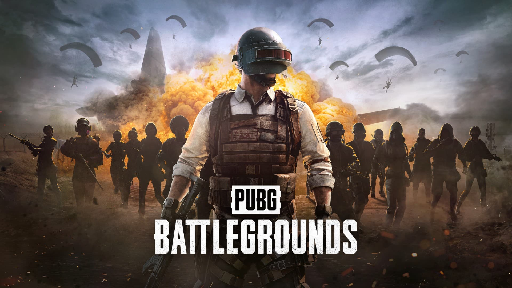
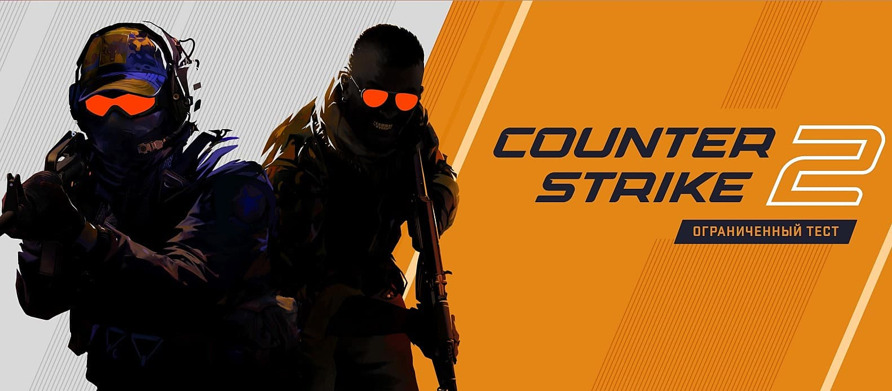

Упродовж більш ніж двох десятиліть Counter-Strike пропонував елітний змагальний досвід,
Упродовж більш ніж двох десятиліть Counter-Strike пропонував елітний змагальний досвід,
сформований мільйонами гравців з усього світу.
І тепер починається новий розділ в історії CS: Counter-Strike 2.